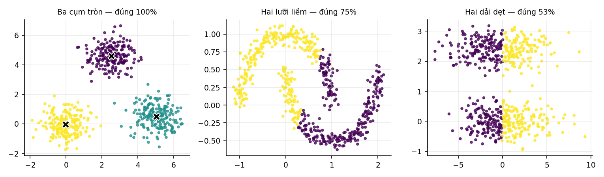

15. Phân cụm: K-means#
Khởi tạo ngẫu nhiên kẹt ở nghiệm tồi 71,5% số lần; ba giả định ngầm về hình dạng cụm, và chuyện gì xảy ra khi chúng sai.
15.1. Bài toán và thuật toán#
Không có nhãn, chỉ có . Chia điểm thành cụm sao cho tổng bình phương khoảng cách tới tâm cụm nhỏ nhất:
Bài toán này NP-khó. Thuật toán Lloyd giải xấp xỉ bằng cách lặp hai bước:
- Gán: mỗi điểm về tâm gần nhất.
- Cập nhật: mỗi tâm thành trung bình các điểm thuộc về nó.
Cả hai bước đều không làm tăng hàm mục tiêu, và số cách phân hoạch là hữu hạn, nên thuật toán chắc chắn dừng. Nhưng nó chỉ dừng ở cực tiểu địa phương — đây là hệ quả trực tiếp của Chương 11: hàm mục tiêu không lồi theo .
15.2. Khởi tạo quyết định kết quả#
Thí nghiệm chạy 200 lần trên dữ liệu 8 cụm, mỗi lần một hạt giống khác:
| Cách khởi tạo | Quán tính nhỏ nhất | Trung bình | % lần kẹt ở nghiệm tồi |
|---|---|---|---|
| Ngẫu nhiên thuần | 407,992 | 517,838 | 71,5 |
| k-means++ | 407,992 | 476,529 | 46,5 |
Khởi tạo ngẫu nhiên thuần kẹt ở nghiệm tồi 71,5% số lần. Con số ấy nói rằng chạy K-means đúng một lần rồi tin kết quả là sai lầm nghiêm trọng.
k-means++ chọn các tâm ban đầu tuần tự, mỗi tâm mới được rút với xác suất tỉ lệ tới tâm gần nhất đã chọn — tức ưu tiên những chỗ xa. Nó hạ tỉ lệ kẹt xuống 46,5%, tức cải thiện rõ nhưng không giải quyết triệt để.
Hệ quả thực tế. Luôn chạy nhiều lần rồi giữ kết quả có quán tính nhỏ nhất.
sklearn.cluster.KMeansmặc địnhn_init=10vàinit='k-means++'đúng vì lý do này.
15.3. K-means giả định gì#

| Hình dạng cụm | Độ chính xác gom cụm |
|---|---|
| Ba cụm tròn, tách rời | 1,0000 |
| Hai hình lưỡi liềm lồng nhau | 0,7517 |
| Hai dải dẹt nằm ngang | 0,5317 |
Dòng cuối gần như bằng đoán bừa (0,5) — K-means thất bại hoàn toàn.
Vì sao? Vì nó gán mỗi điểm cho tâm gần nhất theo khoảng cách Euclid, nên biên giữa hai cụm bất kỳ luôn là một siêu phẳng — chính xác là mặt trung trực của đoạn nối hai tâm. Ba giả định ngầm theo sau:
- Cụm có dạng lồi và gần hình cầu.
- Các cụm có kích thước tương đương.
- Mọi chiều cùng thang đo — nếu không thì khoảng cách Euclid vô nghĩa.
Hai dải dẹt vi phạm giả định 1: cụm đúng bị kéo dài theo chiều ngang, nên mặt phẳng chia tối ưu theo Euclid lại cắt ngang chúng thay vì tách chúng.
Khi các giả định ấy sai, có lựa chọn khác: mô hình hỗn hợp Gauss cho phép cụm hình elip; DBSCAN cho phép cụm hình dạng tuỳ ý và tự xác định số cụm; phân cụm phổ biến đổi không gian trước rồi mới dùng K-means.
15.4. Chọn #
Hàm mục tiêu luôn giảm khi tăng — với thì quán tính bằng 0. Nên không thể chọn bằng cách tối thiểu hoá nó.
| Quán tính | Giảm so với | |
|---|---|---|
| 5 | 902,24 | 21,6% |
| 6 | 727,79 | 19,3% |
| 7 | 563,93 | 22,5% |
| 8 | 407,99 | 27,7% |
| 9 | 385,82 | 5,4% |
| 10 | 364,76 | 5,5% |
Dữ liệu có đúng 8 cụm, và bảng chỉ đúng chỗ ấy: mức giảm là 27,7% khi lên rồi rơi xuống 5,4% khi lên . Đó là khuỷu tay — chỗ mà thêm cụm không còn mua được gì nhiều.
Nhưng khuỷu tay không phải một định nghĩa toán học. Nó là một quy tắc nhìn bằng mắt, và trên dữ liệu thật nó thường không rõ ràng như bảng trên. Các lựa chọn khác: điểm bóng (silhouette) đo mức một điểm hợp với cụm của nó hơn cụm gần nhất, hoặc thống kê khoảng trống (gap statistic) so quán tính với quán tính trên dữ liệu ngẫu nhiên. Và thường thì được quyết định bởi nghiệp vụ chứ không bởi dữ liệu.
Tự kiểm tra
4 câu. Chọn đáp án để xem ngay lời giải thích.
1K-means bảo đảm điều gì?
Vì sao: Cả hai bước đều không làm tăng hàm mục tiêu và số cách phân hoạch là hữu hạn, nên nó chắc chắn dừng — nhưng dừng ở đâu thì tuỳ khởi tạo.2k-means++ cải thiện được bao nhiêu trong thí nghiệm ở Mục 15.2?
Vì sao: Vì vậy vẫn phải chạy nhiều lần rồi giữ kết quả có quán tính nhỏ nhất.KMeanscủa scikit-learn mặc địnhn_init=10chính vì lý do này.3Ba giả định ngầm của K-means là gì?
Vì sao: Vì nó gán điểm cho tâm gần nhất theo khoảng cách Euclid, biên giữa hai cụm luôn là siêu phẳng. Đo được: ba cụm tròn → đúng 100%; hai lưỡi liềm → 75%; hai dải dẹt → 53%, gần như đoán bừa.4Vì sao không thể chọn bằng cách tối thiểu hoá quán tính?
Vì sao: Quy tắc khuỷu tay nhìn chỗ mức giảm chậm hẳn lại. Đo trên dữ liệu 8 cụm: mức giảm 27,7% khi lên rồi rơi xuống 5,4% khi lên . Nhưng khuỷu tay không phải định nghĩa toán học và thường không rõ trên dữ liệu thật.
Đã trả lời 0/4